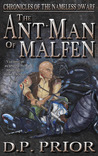
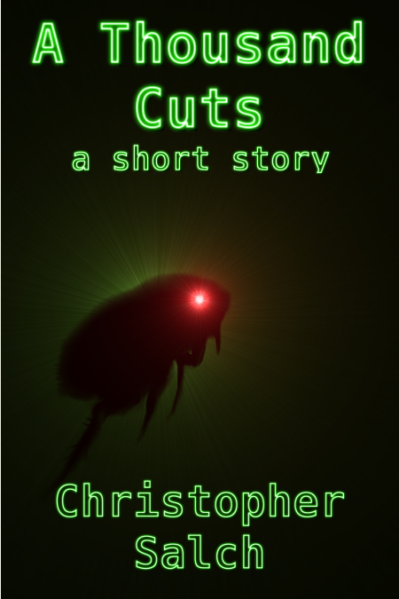
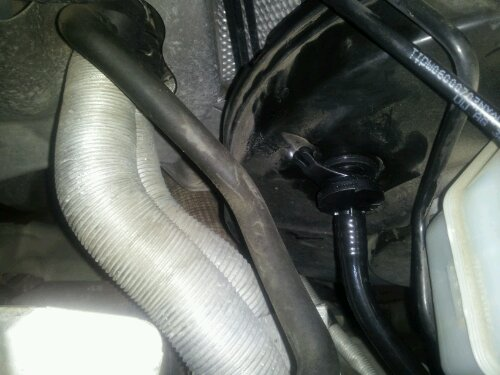

Happy New Year! Yesterday was the end of the old and today is the beginning of the new.
(Whoops! Make that the day before yesterday)
Happy New Year! (2013)
A Thousand Cuts — Free the 28th!
If you want a copy, grab it while you can!
http://www.amazon.com/A-Thousand-Cuts-ebook/dp/B00ARIC1GQ
Just Finished Reading — The Ant-Man of Malfen
The Ant-Man of Malfen by D.P. Prior
My rating: 5 of 5 stars
Very well written! The world of the Nameless dwarf has a great deal of depth and richness to it. Reading through this story has made me want to go hunt down other books in the Nameless Dwarf series just to explore the world Prior has put together. The forward also struck a cord with me as I’ve done a bit of role playing on in the past and often wondered about writing something based on an old character. One thing I will say for Prior, he is very good at describing combat and his Nameless dwarf does “Kill. A lot.” If you’re a fan of dungeon crawling definitely get a copy of this book.
A Thousand Cuts — Free the 24th!
If you read my last post, you’ll see that I just pushed out A Thousand Cuts on Amazon. Since I’m a little on the crazy side anyhow, the story will be free on the 24th! Grab a copy while you can!
A Thousand Cuts
A while back I wrote a short story for the Scare-Us event over on LitReactor that I’ve been meaning to do something with for a while. The premise behind the event was to write a story that involved a unique creature involving at least three deaths set in your hometown. Here’s a cover idea that I whipped up to go along with the story.

Cover for “A Thousand Cuts”
It should be ready to push out to Amazon here in the next couple of days, Until then, here’s a little taste from the beginning:
A Thousand Cuts – Excerpt
We were a happy couple, Catharine and I, moving from an apartment of little more than two rooms, into our very first real home. It wasn’t much to look at, but it was ours and that was all that really mattered. Catharine’s parents had known the old widower who lived next door for years and were good friends with his two daughters. When he passed, Mr. Gallinulae willed the property to his children. Neither of the women could use the place, and Catharine’s parents knew we were looking for something larger now that we had Julia. They helped us negotiate with the Gallinulae women, now Mrs. Nosopsyllus and Mrs. Pulex, to buy the place.
In the new house, Julia would get a room all to herself. Her crib had occupied the corner of our bedroom for just over year and a half. Now she was going to be sleeping in a “big girl bed” in her own room. She was so happy with her newfound independence, and Catharine and I were looking forward to a little more privacy.
Samson, our big orange cat, was as ornery as ever. His royal highness could not stand the indignity of being stuffed into a carrier. He scratched me good across the bridge of my nose, along my right arm, and just about anywhere else he could bring a claw to bear when I forced him into the cage. I’m sure that obstinate feline damaged the hearing in my right ear with his yowls. If the trip to the new house had been any longer than the five minutes it took to cross town that wild beast would have clawed his way through the carrier’s thin plastic.
I wonder if that was what started it? Did they smell the fresh blood from my injuries? Did the prospect of fresh food wake them from their slumber?
UPDATE:
A Thousand Cuts is in the process of being published on Amazon and should be live in the next 12~24 hours or so. I’ve already got the link setup to the right. Yay!
Proofs of That Which is Nameless
I just three proof copies of the paper back version of That Which is Nameless. The cover came out beautifully! Here’s a shot of the one (technically there are two in the photo):
I went with Create Space for this run. Even though I’m not really making any money at this right now, I’m kind of liking the whole “indie author” bit. It does take a lot of time and work to get something into a state where you’re willing to let someone else read it, but that work does culminate in a sense of satisfaction. In any event, I’ll be approving this run as soon as I’m finished with a read through. If you want a copy, you’ll have to live with the e-book version until then (Don’t forget it’s free on the 12th!).
Oh and Merry Christmas!
That Which is Nameless – Free for a Day!
To anyone who’s interested, I’ll be giving away That Which is Nameless will be free on Amazon for a day on Wednesday, December 12th! If you grab a copy, I’d love to hear what you think.
The Curse of National Novel Writing Month
ARGH!!!!!!!!!!
That about sizes up what it feels like when you finally realize that there is no way you are going to be able to finish your National Novel Writing Month project in the time allotted. It’s a conclusion that I came to about a week to two weeks ago now as I’m sure (if I still have the little calendar posted there) can see by all the red on the progress calendar. This will be the second year in a row that I’ve failed at churning out a novel in a month.
Time seems to be the biggest issue. It takes me a good three to four hours to churn out that sixteen hundred words or so which burns the entire evening for me. If that were the only thing I had to do, it would be relatively easy to accomplish. Unfortunately, I have a day job that keeps me occupied and other elements of a reasonably diverse life that burn up the rest of the time. So, I’ve dropped the NaNo deadline and will be working through the project as time permits.
My current plan is to let my brain recuperate from Thanks Giving and the surge of writing the start of the month and pick it up again. The story was going to be set in the Zachary Artemas universe and I’m still planning to work in the plot there. It may wind up being background story for some of the characters that show latter in that story line.
The Joy’s of NaNoWrimo
As I’m writing this my National Novel Writing project is about seven thousand words behind where it should be. That will turn into eight thousand if I don’t catch up to my quota for today before midnight. Ah the torturous death march to completion that is NaNo!
My project this year is a actually taking place in the same universe as the The Erasable Man and will probably turn into a sort of origin story for Zachary Artemas. That is assuming that I can get the characters to agree to play along. I am discovering that the more I write, the less my characters like to do what I want them to. It can get really annoying at times to say the least. Still, you have to be true to who the character is or the story is going to go badly very quickly.
As a side note, I’m going to start some of the character and world notes that go along with The Erasable Man. Early next year I expect to have at least part of The Erasable Man ready for beta reading, if you’re interested, drop me a line here and I’ll get back with you.
Back to the day job and NaNo!
UPDATE: I’m right at six thousand behind right now, but that will probably disappear tomorrow over game night.
Two Annoying Weeks of Car Trouble
Perhaps I’m not the most mechanically inclined person in the world but I do like to do my best to fix what’s broken before calling a mechanic. Usually, I can get the job done cheaper if not faster, than would otherwise be possible. Then again, sometimes things take a little worse turn.
About a week ago, my wife told me that her Passat had a check engine light on, a new occurrence for that car. It bugged me a little, but not enough to be overly worried. That evening when she got it home, I took a look and found the light still on. So, it wasn’t a case of a loose gas cap or something that simple. I started it up and did some looking/listening under the hood.
Gasoline engines run on a mixture of fuel and air balanced just right so that it burns inside the engine. There’s a sensor just behind the air filter called a Mass Air Flow sensor that keeps track of how much air the engine is pulling in so that the computer knows how much fuel needs to be fed into the cylinders. (Bare in mind that this is a gross oversimplification of the process.) Since gasoline engines need so much air they create a strong enough vacuum that it can be used to do other things on the car. You’d be amazed and just how many things are vacuum powered on your average vehicle. Everything from parts of the air-conditioner to the fuel pressure regulator have a tie in. Most of these vacuum powered devices are hooked into the system upstream of the MAF. When one of them springs a leak the computer detects that more air is reaching the cylinder than should be and tells you something is wrong with a nasty orange light on the dashboard. If you’re lucky, you can sometimes, not always, hear a distinct hissing sound in the engine compartment near where the leak is.
In my case, the hose feeding into the break vacuum booster went bad on me. I’ll have to get some shots of the old hose and add them here later. Here’s the new one installed with a replacement grommet:

Do you see that shiny new host there in the middle attached to the shiny new check-valve and the shiny new grommet/gasket that it’s seated into in the break vacuum booster? If that doesn’t mean much to you, the only “clean” hose a little to the right is the one that I’m talking about and the big black thing that it is hooked into is the booster. It doesn’t look like much but the booster puts extra power into the breaks when you’re stopping. Not something that you want to have fail!
A vacuum hose isn’t really anything that complex to replace, or at least that’s what I thought when I started this mess. Of course, the local Volkswagen house didn’t have the part in-stock and couldn’t identify it for certain either. The part’s manager was nice enough to order the two parts his diagrams said it could be, since he’d sold both of them in the past, and let me take the one I needed. That took a week to finally show up.
That Saturday, I spent a good two hours trying to get the other end of that hose out of the engine. It’s buried up under the back side of the engine where it is almost impossible to get to unless you’re all but hugging it. Once I finally figured that little bit out, it came off pretty easily and the new hose hooked up just fine. By this point I was probably running a little low on blood sugar as I hadn’t had breakfast yet and found myself having trouble with the check-valve end. So, as an experiment, I pulled the little grommet out of the break booster and put it on the check-valve thinking that I might be able to seat the valve more easily that way.
Nope.
Between trying to seat the valve and realizing that I would have to put the grommet back, I dropped it. As cars have a tendency to do, it ate the grommet. I’m still not sure where it landed though I did find it when I finally got the vehicle running again. After a good ten minutes of fruitlessly looking with a flashlight around the engine and under the car I gave up. Even in broad daylight there are enough nooks and crannies in the engine compartment to turn hunting for a lost something into cave exploration. So, I went looking for a replacement. No luck. Another call to the Volkswagen house and another order, they didn’t have the grommet in-stock but could order it, and I was stuck waiting until the following Tuesday.
The new grommet went in perfectly and I didn’t drop it! Yay! It also seemed like the check-valve went in a good deal easier with the new grommet as well. So, two plus weeks and the check engine light is gone with about forty dollars in parts. If you factor in my time, it was much more expensive than the about two hundred or so I would have paid a mechanic to do the job, but that’s the way things go! On the other hand, I can say I’ve replaced a vacuum booster check-valve which is a little unusual for your average author/computer programmer.


{kind=link}
{kind=link}